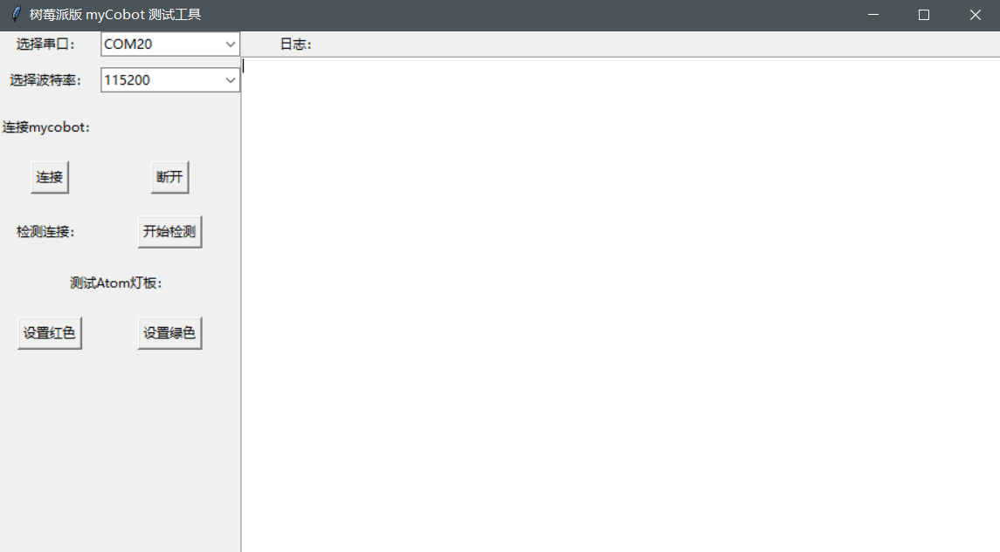
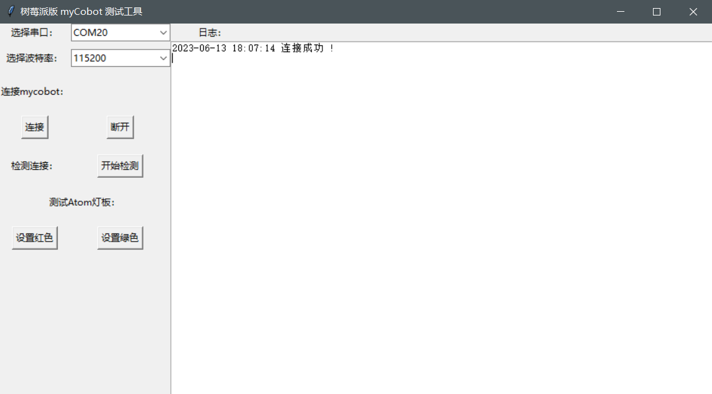
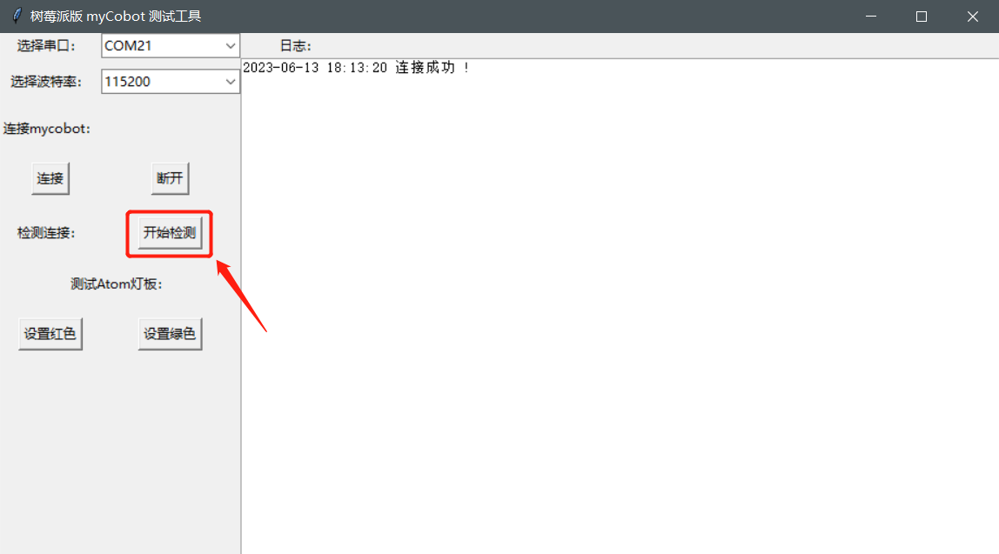
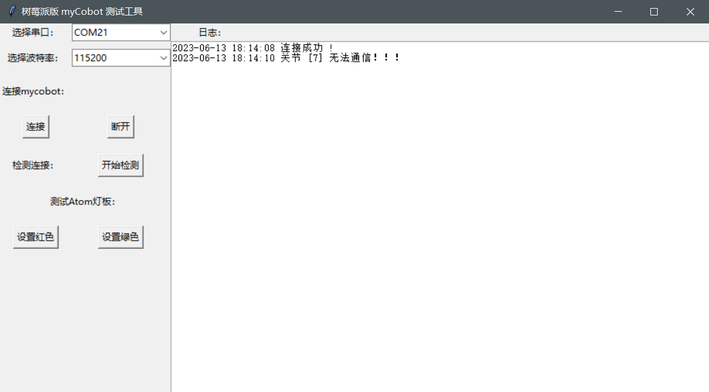
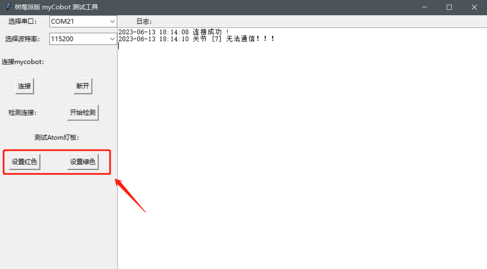
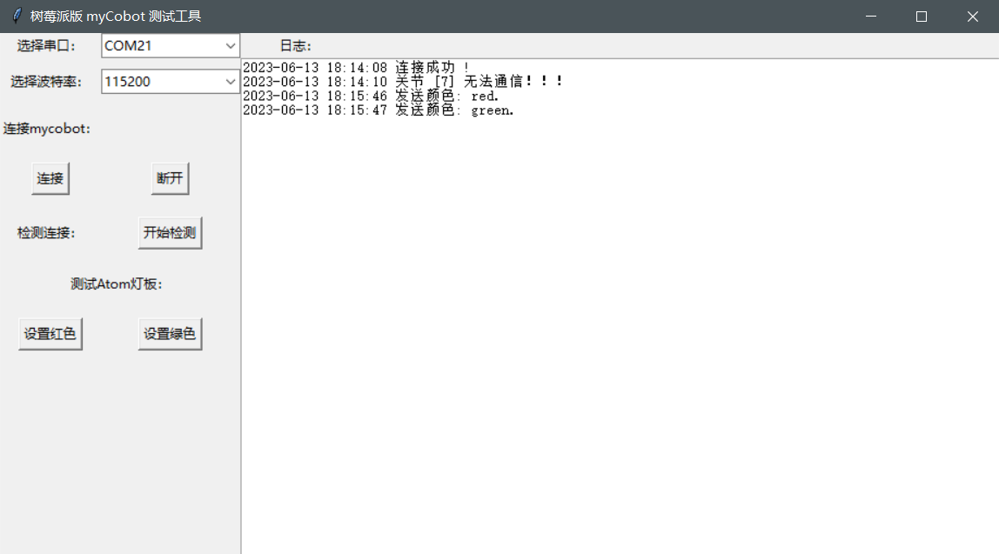

1. 实现连接检测
1.1. 1 适用设备
- myCobot 280 Pi
- myCobot 320 Pi
- mechArm 270 Pi
1.2. 2 操作步骤
Step 1: Atom烧录最新版的atomMain。
Step 2: 在桌面新建一个 Python 文件为 *.py，将下列代码拷贝进去并保存。
注意：文件命名为：myCobot_test_demo_CN.py。
from pymycobot.mycobot import MyCobot
LOG_NUM = 0
class MycobotTest(object):
def __init__(self):
self.mycobot = None
self.win = tkinter.Tk()
self.win.title("树莓派版 myCobot 测试工具")
self.win.geometry("918x480+10+10") # 290 160为窗口大小，+10 +10 定义窗口弹出时的默认展示位置
self.port_label = tkinter.Label(self.win, text="选择串口：")
self.port_label.grid(row=0)
self.port_list = ttk.Combobox(
self.win, width=15, postcommand=self.get_serial_port_list
) # #创建下拉菜单
self.get_serial_port_list() # #给下拉菜单设定值
self.port_list.current(0)
self.port_list.grid(row=0, column=1)
self.baud_label = tkinter.Label(self.win, text="选择波特率：")
self.baud_label.grid(row=1)
self.baud_list = ttk.Combobox(self.win, width=15)
self.baud_list["value"] = ("1000000", "115200")
self.baud_list.current(1)
self.baud_list.grid(row=1, column=1)
# Connect
self.connect_label = tkinter.Label(self.win, text="连接mycobot：")
self.connect_label.grid(row=2)
self.connect = tkinter.Button(self.win, text="连接", command=self.connect_mycobot)
self.disconnect = tkinter.Button(
self.win, text="断开", command=self.disconnect_mycobot
)
self.connect.grid(row=3)
self.disconnect.grid(row=3, column=1)
# Check servo.
self.check_label = tkinter.Label(self.win, text="检测连接：")
self.check_label.grid(row=4)
self.check_btn = tkinter.Button(
self.win, text="开始检测", command=self.check_mycobot_servos
)
self.check_btn.grid(row=4, column=1)
# LED.
self.set_color_label = tkinter.Label(self.win, text="测试Atom灯板：")
self.set_color_label.grid(row=5, columnspan=2)
self.color_red = tkinter.Button(
self.win, text="设置红色", command=lambda: self.send_color("red")
)
self.color_green = tkinter.Button(
self.win, text="设置绿色", command=lambda: self.send_color("green")
)
self.color_red.grid(row=6)
self.color_green.grid(row=6, column=1)
# Log output.
self.log_label = tkinter.Label(self.win, text="日志：")
self.log_label.grid(row=0, column=12)
_f = tkinter.Frame(self.win)
_bar = tkinter.Scrollbar(_f, orient=tkinter.VERTICAL)
self.log_data_Text = tkinter.Text(
_f, width=100, height=35, yscrollcommand=_bar.set
)
_bar.pack(side=tkinter.RIGHT, fill=tkinter.Y)
_bar.config(command=self.log_data_Text.yview)
self.log_data_Text.pack()
# self.log_data_Text.grid(row=1, column=12, rowspan=15, columnspan=10)
_f.grid(row=1, column=12, rowspan=15, columnspan=10)
def run(self):
self.win.mainloop() # run
# ============================================================
# Connect method
# ============================================================
def connect_mycobot(self):
self.prot = port = self.port_list.get()
if not port:
self.write_log_to_Text("请选择串口")
return
self.baud = baud = self.baud_list.get()
if not baud:
self.write_log_to_Text("请选择波特率")
return
baud = int(baud)
try:
# self.mycobot = MyCobot(PI_PORT, PI_BAUD)
self.mycobot = MyCobot(port, baud)
time.sleep(0.5)
self.mycobot._write([255,255,3,22,1,250])
time.sleep(0.5)
# self.mycobot = MyCobot("/dev/cu.usbserial-0213245D", 115200)
self.write_log_to_Text("连接成功 !")
except Exception as e:
err_log = """\
\r连接失败 !!!
\r=================================================
{}
\r=================================================
""".format(
e
)
self.write_log_to_Text(err_log)
def disconnect_mycobot(self):
if not self.has_mycobot():
return
try:
del self.mycobot
self.mycobot = None
self.write_log_to_Text("断开连接成功 !")
except AttributeError:
self.write_log_to_Text("还没有连接mycobot！！！")
# ============================================================
# Function method
# ============================================================
def check_mycobot_servos(self):
if not self.has_mycobot():
return
res = []
for i in range(1,8):
_data = self.mycobot.get_servo_data(i , 5)
time.sleep(0.02)
if _data != i:
res.append(i)
if res:
self.write_log_to_Text("关节 {} 无法通信！！！".format(res))
else:
self.write_log_to_Text("所有关节连接正常。")
def send_color(self, color: str):
if not self.has_mycobot():
return
color_dict = {
"red": [255, 0, 0],
"green": [0, 255, 0],
"blue": [0, 0, 255],
}
self.mycobot.set_color(*color_dict[color])
self.write_log_to_Text("发送颜色: {}.".format(color))
# ============================================================
# Utils method
# ============================================================
def has_mycobot(self):
"""Check whether it is connected on mycobot"""
if not self.mycobot:
self.write_log_to_Text("还没有连接mycobot！！！")
return False
return True
def get_serial_port_list(self):
plist = [
str(x).split(" - ")[0].strip() for x in serial.tools.list_ports.comports()
]
print(plist)
self.port_list["value"] = plist
return plist
def get_current_time(self):
"""Get current time with format."""
current_time = time.strftime("%Y-%m-%d %H:%M:%S", time.localtime(time.time()))
return current_time
def write_log_to_Text(self, logmsg: str):
global LOG_NUM
current_time = self.get_current_time()
logmsg_in = str(current_time) + " " + str(logmsg) + "\n" # 换行
if LOG_NUM <= 18:
self.log_data_Text.insert(tkinter.END, logmsg_in)
LOG_NUM += len(logmsg_in.split("\n"))
# print(LOG_NUM)
else:
self.log_data_Text.insert(tkinter.END, logmsg_in)
self.log_data_Text.yview("end")
if __name__ == "__main__":
MycobotTest().run()
Step 3: 打开一个控制终端，输入以下命令：
cd ~/Desktop/
python3 myCobot_test_demo_CN.py
Step 4: 选择设备相对应的波特率，点击连接。
- myCobot 280-Pi：1000000
- myCobot 320-Pi：115200


Step 5: 将机械臂各关节处于零位状态，点击开始检测。

Step 6: 等待界面出现关节 [7] 无法通信！ ，机械臂设备检测正常。

Step 7: 此处两个按钮可改变Atom LED颜色

